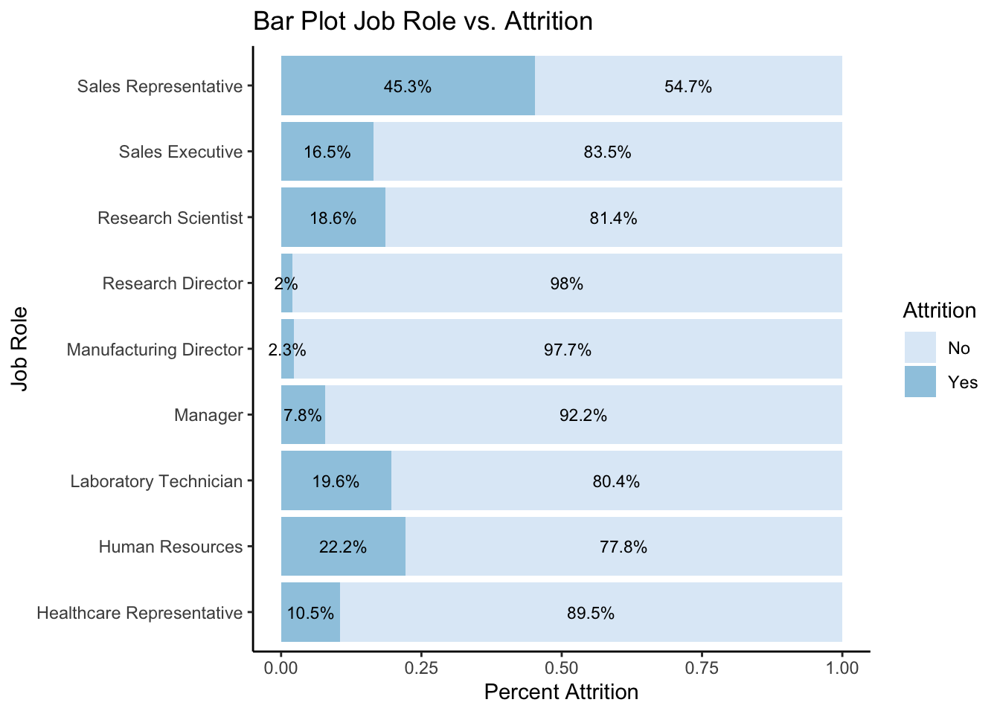
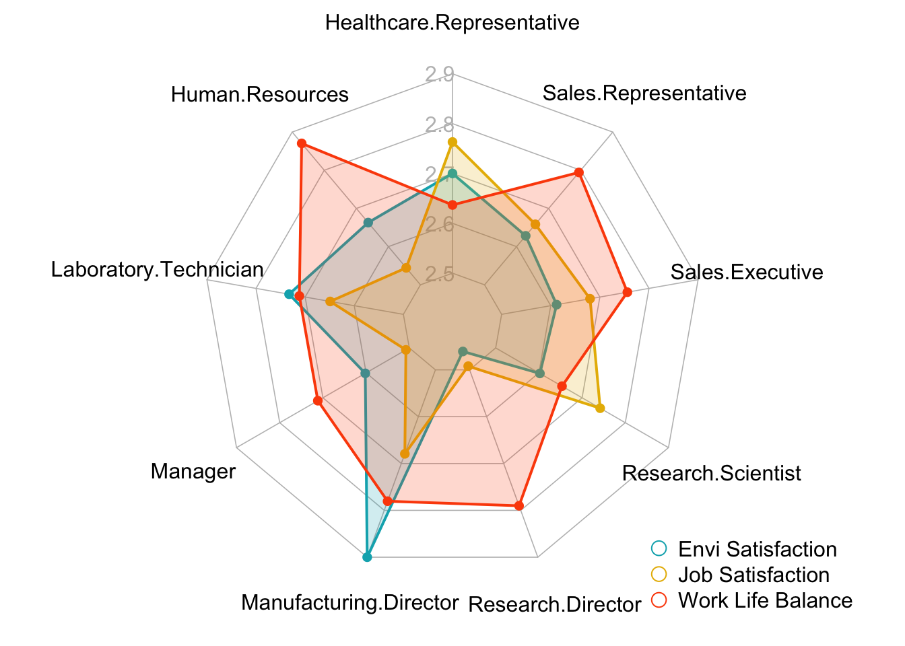
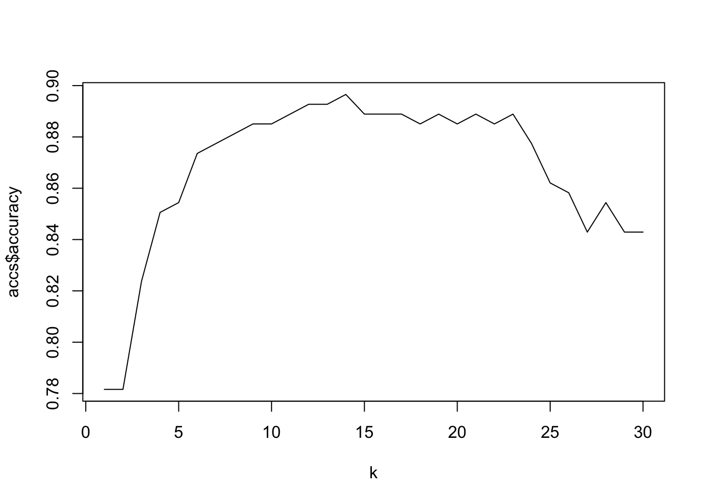
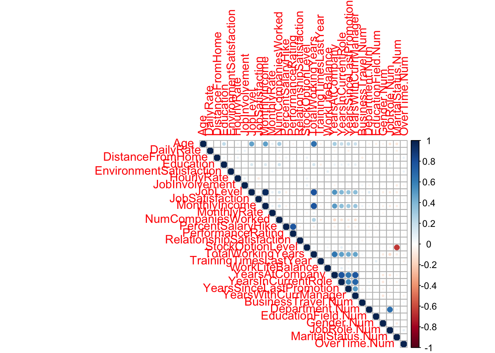
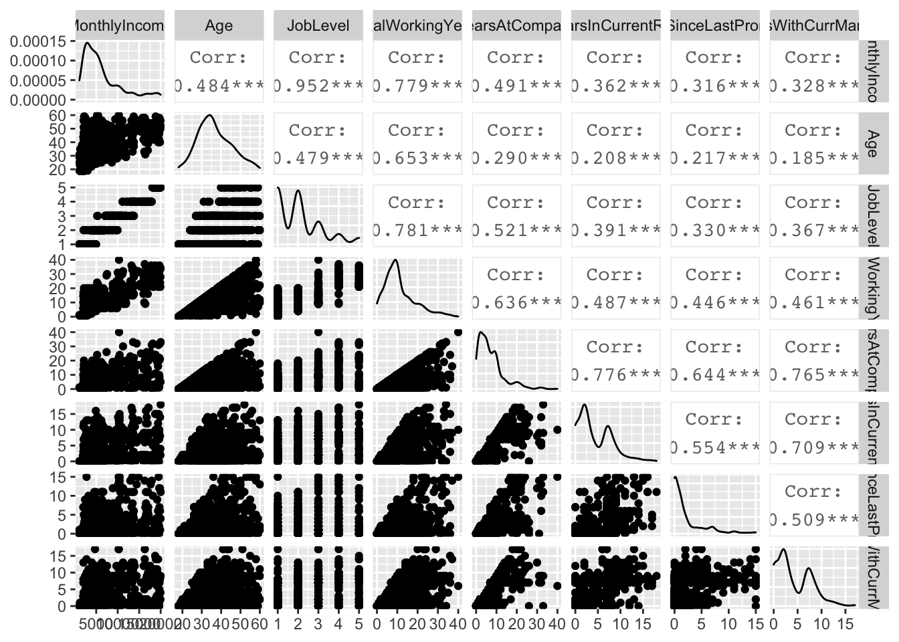
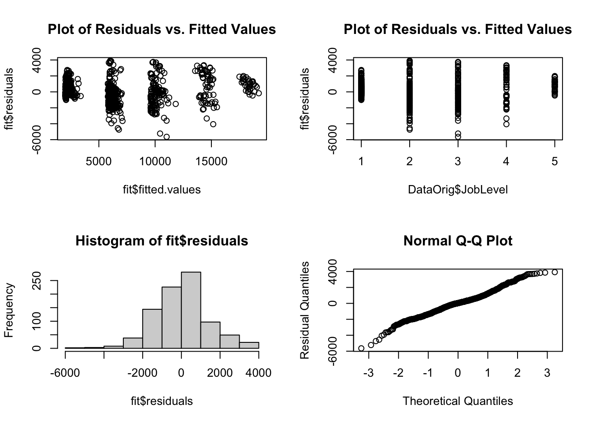

The analysis of employee attrition and salary prediction was conducted using 870 observations (employees) dataset from DDSAnalytics Company. Some of the focuses of this exploratory data analysis were placed on attrition and salary prediction, and trends for specific job roles.
This analysis is useful for DDSAnalytics future business decision.
# Read in the data
DataOrig = read.csv("CaseStudy2-data.csv",header = TRUE)
# Explore missing values in each columns - There is none!
sapply(DataOrig, function(x) sum(is.na(x)))## ID Age Attrition
## 0 0 0
## BusinessTravel DailyRate Department
## 0 0 0
## DistanceFromHome Education EducationField
## 0 0 0
## EmployeeCount EmployeeNumber EnvironmentSatisfaction
## 0 0 0
## Gender HourlyRate JobInvolvement
## 0 0 0
## JobLevel JobRole JobSatisfaction
## 0 0 0
## MaritalStatus MonthlyIncome MonthlyRate
## 0 0 0
## NumCompaniesWorked Over18 OverTime
## 0 0 0
## PercentSalaryHike PerformanceRating RelationshipSatisfaction
## 0 0 0
## StandardHours StockOptionLevel TotalWorkingYears
## 0 0 0
## TrainingTimesLastYear WorkLifeBalance YearsAtCompany
## 0 0 0
## YearsInCurrentRole YearsSinceLastPromotion YearsWithCurrManager
## 0 0 0Job Role vs. Attrition
df.JobRole = DataOrig %>% group_by(JobRole, Attrition) %>% summarise(count=n()) %>% mutate(pct=count/sum(count))
df.JobRole %>% ggplot(aes(x=JobRole, y=pct, fill=Attrition)) + geom_bar(stat="identity") +
geom_text(aes(label=paste0(round(pct*100,1),"%")),
position = position_stack(vjust = 0.5), size = 3) + labs(title = 'Bar Plot Job Role vs. Attrition', x = 'Job Role', y = 'Percent Attrition') +
theme_classic() + scale_fill_brewer(palette="Blues") + coord_flip()
Job Role vs. Environment Satisfaction, Job Satisfaction, and Work Life Balance
#Prepare data for radar plot
JobRoleData <- DataOrig %>%
dplyr::group_by(JobRole) %>%
dplyr::summarize(EnvironmentSatisfaction_mean = mean(EnvironmentSatisfaction),
JobSatisfaction_mean = mean(JobSatisfaction),
WorkLifeBalance_mean = mean(WorkLifeBalance))
JobRoleData <-as.data.frame(JobRoleData)
n <- JobRoleData$JobRole
JobRoleData <- as.data.frame(t(JobRoleData[,-1]))
colnames(JobRoleData) <- n
names(JobRoleData) <- sub(" ", ".", names(JobRoleData))
max_min <- data.frame(
`Healthcare Representative` = c(3, 2.5),
`Human Resources` = c(3, 2.5),
`Laboratory Technician` = c(3, 2.5),
`Manager` = c(3, 2.5),
`Manufacturing Director` = c(3, 2.5),
`Research Director`= c(3, 2.5),
`Research Scientist` = c(3, 2.5),
`Sales Executive`= c(3, 2.5),
`Sales Representative`= c(3, 2.5))
rownames(max_min) <- c("Max", "Min")
df <- rbind(max_min, JobRoleData)
create_beautiful_radarchart <- function(data, color = "#00AFBB",
vlabels = colnames(data), vlcex = 1,
caxislabels = NULL, title = NULL, ...){
radarchart(
data, axistype = 1,
# Customize the polygon
pcol = color, pfcol = scales::alpha(color, 0.2), plwd = 2, plty = 1,
# Customize the grid
cglcol = "grey", cglty = 1, cglwd = 0.8,
# Customize the axis
axislabcol = "grey",
# Variable labels
vlcex = vlcex, vlabels = vlabels,
caxislabels = caxislabels, title = title, ...
)
}
par(mar=c(0,0,0,0))
# Create the radar charts
create_beautiful_radarchart(
data = df, caxislabels = c(2.5,2.6,2.7,2.8,2.9),
color = c("#00AFBB", "#E7B800", "#FC4E07")
)
# Add an horizontal legend
legend(
x=.75, y=-.8, legend = c("Envi Satisfaction","Job Satisfaction", "Work Life Balance"), horiz = FALSE,
bty = "n", pch = 1 , col = c("#00AFBB", "#E7B800", "#FC4E07"),
text.col = "black", cex = 1, pt.cex = 1.5
)
To Identify the top three factors for attrition, the analyst created an RShiny app (in the link below) to help visualization the dataset
https://purifect.shinyapps.io/Employee_Attrition/
The top three factors responsible for attrition are Monthly Income, Job Involvement, and Overtime
Apply the three main factors with kNN technique to create an Attrition Prediction model
set.seed(8)
splitPerc = .7
ImpFactors <- subset(DataOrig, select = c(Attrition, JobInvolvement, MonthlyIncome, OverTime.Num))
ImpFactors$MonthlyIncome <- scale(ImpFactors$MonthlyIncome)
#ImpFactors$Age <- scale(ImpFactors$Age)
trainIndices = sample(1:dim(ImpFactors)[1], round(splitPerc * dim(ImpFactors)[1]))
train.Attrition = ImpFactors[trainIndices,]
test.Attrition = ImpFactors[-trainIndices,]
# run knn
classifications = knn(train.Attrition[,c(2:4)], test.Attrition[,c(2:4)], train.Attrition$Attrition, prob = TRUE, k = 21)
# Confusion Matrix
confusionMatrix(table(test.Attrition$Attrition, classifications))## Confusion Matrix and Statistics
##
## classifications
## No Yes
## No 217 1
## Yes 28 15
##
## Accuracy : 0.8889
## 95% CI : (0.8443, 0.9243)
## No Information Rate : 0.9387
## P-Value [Acc > NIR] : 0.9992
##
## Kappa : 0.4602
##
## Mcnemar's Test P-Value : 1.379e-06
##
## Sensitivity : 0.8857
## Specificity : 0.9375
## Pos Pred Value : 0.9954
## Neg Pred Value : 0.3488
## Prevalence : 0.9387
## Detection Rate : 0.8314
## Detection Prevalence : 0.8352
## Balanced Accuracy : 0.9116
##
## 'Positive' Class : No
## # Find Sensitivity and Specificity for Train Set
classifications_train = knn(train.Attrition[,c(2:4)], train.Attrition[,c(2:4)], train.Attrition$Attrition, prob = TRUE, k = 5)
confusionMatrix(table(train.Attrition$Attrition, classifications_train))## Confusion Matrix and Statistics
##
## classifications_train
## No Yes
## No 501 11
## Yes 70 27
##
## Accuracy : 0.867
## 95% CI : (0.8374, 0.893)
## No Information Rate : 0.9376
## P-Value [Acc > NIR] : 1
##
## Kappa : 0.3409
##
## Mcnemar's Test P-Value : 1.16e-10
##
## Sensitivity : 0.8774
## Specificity : 0.7105
## Pos Pred Value : 0.9785
## Neg Pred Value : 0.2784
## Prevalence : 0.9376
## Detection Rate : 0.8227
## Detection Prevalence : 0.8407
## Balanced Accuracy : 0.7940
##
## 'Positive' Class : No
## Loop for many k and one training / test partition
accs = data.frame(accuracy = numeric(30), k = numeric(30))
for(i in 1:30)
{
classifications = knn(train.Attrition[,c(2:4)], test.Attrition[,c(2:4)], train.Attrition$Attrition, prob = TRUE, k = i)
table(test.Attrition$Attrition, classifications)
CM = confusionMatrix(table(test.Attrition$Attrition, classifications))
accs$accuracy[i] = CM$overall[1]
accs$k[i] = i
}
plot(accs$k,accs$accuracy, type = "l", xlab = "k")
Then write attrition predicted values for ‘CaseStudy2CompSet No Attrition.csv’ to csv File
# Read in 'No Attrition' file
No.AttritionOrig <- read.csv("CaseStudy2CompSet No Attrition.csv", header=TRUE)
# Only include variables that used in the model
No.Attrition <- subset(No.AttritionOrig, select = c(ID, JobInvolvement, MonthlyIncome, OverTime))
# Use Scale with MonthlyIncome and change OverTime to interger value
No.Attrition$MonthlyIncome <- scale(No.Attrition$MonthlyIncome)
No.Attrition$OverTime <- as.integer(as.factor(No.Attrition$OverTime))
classifications = knn(train.Attrition[,c(2:4)], No.Attrition[,c(2:4)], train.Attrition$Attrition, k = 21, prob = TRUE)
# Cleanup the df to match example file before writing
Attrition.Prediction <- as.data.frame(classifications)
Attrition.Prediction$ID <- No.Attrition$ID
No.Attrition_pred <- merge(x = No.AttritionOrig, y = Attrition.Prediction,
by.x = "ID", by.y = "ID", all = TRUE)
names(No.Attrition_pred)[names(No.Attrition_pred)=="classifications"] <- "Attrition"
No.Attrition_pred <- No.Attrition_pred %>% relocate("Attrition", .after = "ID")
# Write to file
write.csv(No.Attrition_pred, "Case2PredictionsRudick Attrition.csv", row.names = FALSE, quote=FALSE)Find correlation coefficient with p-value for numerical variables
Num_col <- subset(DataOrig, select = -c(Attrition, BusinessTravel,
Department, EducationField,
Gender, JobRole, MaritalStatus,
Over18, OverTime,
ID, EmployeeCount,
EmployeeNumber, StandardHours
))
M <- cor(Num_col)
corrplot(M, type="upper")
# Run rcorr(as.matrix(Num_col)) for correlation coefficient with p-value
subset(DataOrig, select = c(MonthlyIncome, Age, JobLevel, TotalWorkingYears, YearsAtCompany, YearsInCurrentRole, YearsSinceLastPromotion, YearsWithCurrManager)) %>%
ggpairs()
# There are 7 columns that have statistically significant correlation (p-value < .05) with good range of correlation coefficient which are Age, JobLevel, TotalWorkingYears, YearsAtCompany, YearsInCurrentRole, YearsSinceLastPromotion, YearsWithCurrManager
# When put all 7 columns to the linear regression model, only JobLevel and TotalWorkingYears are significant
modelNum <- lm(MonthlyIncome ~ Age+JobLevel+TotalWorkingYears+YearsAtCompany+YearsInCurrentRole+YearsSinceLastPromotion+YearsWithCurrManager, data = Num_col)
summary(modelNum)##
## Call:
## lm(formula = MonthlyIncome ~ Age + JobLevel + TotalWorkingYears +
## YearsAtCompany + YearsInCurrentRole + YearsSinceLastPromotion +
## YearsWithCurrManager, data = Num_col)
##
## Residuals:
## Min 1Q Median 3Q Max
## -5699.0 -870.0 29.6 715.0 3942.5
##
## Coefficients:
## Estimate Std. Error t value Pr(>|t|)
## (Intercept) -1608.531 232.252 -6.926 8.47e-12 ***
## Age -3.019 7.105 -0.425 0.6709
## JobLevel 3717.865 69.119 53.789 < 2e-16 ***
## TotalWorkingYears 73.281 13.143 5.576 3.30e-08 ***
## YearsAtCompany -5.555 16.619 -0.334 0.7382
## YearsInCurrentRole -10.207 21.409 -0.477 0.6336
## YearsSinceLastPromotion 1.496 19.414 0.077 0.9386
## YearsWithCurrManager -48.944 21.270 -2.301 0.0216 *
## ---
## Signif. codes: 0 '***' 0.001 '**' 0.01 '*' 0.05 '.' 0.1 ' ' 1
##
## Residual standard error: 1380 on 862 degrees of freedom
## Multiple R-squared: 0.9106, Adjusted R-squared: 0.9099
## F-statistic: 1254 on 7 and 862 DF, p-value: < 2.2e-16Find correlation coefficient with p-value for numerical variables
Categorical <- subset(DataOrig, select = c(MonthlyIncome, BusinessTravel,
Department, EducationField,
Gender, JobRole, MaritalStatus,
OverTime))
modelCat <- lm(MonthlyIncome ~., data = Categorical)
summary(modelCat)##
## Call:
## lm(formula = MonthlyIncome ~ ., data = Categorical)
##
## Residuals:
## Min 1Q Median 3Q Max
## -5242.9 -1226.9 -398.6 1118.8 6924.8
##
## Coefficients:
## Estimate Std. Error t value Pr(>|t|)
## (Intercept) 8078.62 960.04 8.415 < 2e-16 ***
## BusinessTravelTravel_Frequently 797.40 264.70 3.012 0.00267 **
## BusinessTravelTravel_Rarely 666.84 224.93 2.965 0.00311 **
## DepartmentResearch & Development -1551.43 893.70 -1.736 0.08293 .
## DepartmentSales -2081.57 914.06 -2.277 0.02302 *
## EducationFieldLife Sciences 347.96 695.31 0.500 0.61690
## EducationFieldMarketing 415.35 737.18 0.563 0.57329
## EducationFieldMedical 216.85 696.47 0.311 0.75560
## EducationFieldOther 199.64 744.21 0.268 0.78857
## EducationFieldTechnical Degree 329.01 724.95 0.454 0.65006
## GenderMale 50.67 140.41 0.361 0.71829
## JobRoleHuman Resources -5616.70 941.71 -5.964 3.60e-09 ***
## JobRoleLaboratory Technician -4223.44 283.42 -14.902 < 2e-16 ***
## JobRoleManager 9727.44 478.31 20.337 < 2e-16 ***
## JobRoleManufacturing Director 13.12 316.15 0.041 0.96691
## JobRoleResearch Director 8305.85 363.97 22.820 < 2e-16 ***
## JobRoleResearch Scientist -4189.28 277.17 -15.115 < 2e-16 ***
## JobRoleSales Executive -57.11 672.03 -0.085 0.93230
## JobRoleSales Representative -4344.99 714.54 -6.081 1.81e-09 ***
## MaritalStatusMarried -18.74 178.26 -0.105 0.91629
## MaritalStatusSingle -58.02 193.46 -0.300 0.76434
## OverTimeYes 39.30 151.90 0.259 0.79593
## ---
## Signif. codes: 0 '***' 0.001 '**' 0.01 '*' 0.05 '.' 0.1 ' ' 1
##
## Residual standard error: 2006 on 848 degrees of freedom
## Multiple R-squared: 0.8142, Adjusted R-squared: 0.8096
## F-statistic: 177 on 21 and 848 DF, p-value: < 2.2e-16# After trying including every categorical variables to the MLR model, none of them makes the model better and/or makes the ,pde; statistically significantThe analyst decided to use JobLevel, TotalWorkingYears, YearsWithCurrManager for MLR model
fit <- lm(MonthlyIncome ~ JobLevel+TotalWorkingYears+YearsWithCurrManager, data=DataOrig)
summary(fit)##
## Call:
## lm(formula = MonthlyIncome ~ JobLevel + TotalWorkingYears + YearsWithCurrManager,
## data = DataOrig)
##
## Residuals:
## Min 1Q Median 3Q Max
## -5643.3 -874.3 34.4 722.3 3920.6
##
## Coefficients:
## Estimate Std. Error t value Pr(>|t|)
## (Intercept) -1699.16 102.13 -16.636 < 2e-16 ***
## JobLevel 3717.24 68.62 54.175 < 2e-16 ***
## TotalWorkingYears 68.34 10.44 6.545 1.01e-10 ***
## YearsWithCurrManager -59.33 14.74 -4.026 6.18e-05 ***
## ---
## Signif. codes: 0 '***' 0.001 '**' 0.01 '*' 0.05 '.' 0.1 ' ' 1
##
## Residual standard error: 1378 on 866 degrees of freedom
## Multiple R-squared: 0.9105, Adjusted R-squared: 0.9102
## F-statistic: 2938 on 3 and 866 DF, p-value: < 2.2e-16# Check MLR assumptions
par(mfrow=c(2,2))
# Check Multiple Linear Regression Asumption
plot(fit$fitted.values, fit$residuals, main = "Plot of Residuals vs. Fitted Values")
plot(DataOrig$JobLevel, fit$residuals, main = "Plot of Residuals vs. Fitted Values")
hist(fit$residuals)
#ggplot(data = fit, aes(x = fit$residuals)) +
# geom_histogram() +
# labs(title = 'Histogram of Residuals', x = 'Residuals', y = 'Frequency')
qqnorm(fit$residuals, ylab = "Residual Quantiles")
# Find model's RMSE
preds = predict(fit, newdata = DataOrig)
RMSE = data.frame(Observed = DataOrig$MonthlyIncome,
Predicted = preds)
RMSE$Residual = RMSE$Observed - RMSE$Predicted
RMSE$SquaredResidual = RMSE$Residual^2
mean(sqrt(RMSE$SquaredResidual)) #1,035.798## [1] 1035.798Cross Validation by creating Train and Test dataset from the original dataset
# Separated dataset into Train and Test dataset
set.seed(8)
splitPerc = .7
MLR_trainIndices = sample(1:dim(DataOrig)[1], round(splitPerc * dim(DataOrig)[1]))
train.MonthlyIncome = DataOrig[MLR_trainIndices,]
test.MonthlyIncome = DataOrig[-MLR_trainIndices,]
# Created MLR model from Train dataset
model_fit <- lm(MonthlyIncome ~ JobLevel+TotalWorkingYears+YearsWithCurrManager, data=train.MonthlyIncome)
summary(model_fit)##
## Call:
## lm(formula = MonthlyIncome ~ JobLevel + TotalWorkingYears + YearsWithCurrManager,
## data = train.MonthlyIncome)
##
## Residuals:
## Min 1Q Median 3Q Max
## -5609.9 -852.5 29.0 705.9 3952.4
##
## Coefficients:
## Estimate Std. Error t value Pr(>|t|)
## (Intercept) -1744.97 119.56 -14.595 < 2e-16 ***
## JobLevel 3734.81 80.39 46.460 < 2e-16 ***
## TotalWorkingYears 66.58 12.37 5.383 1.05e-07 ***
## YearsWithCurrManager -59.84 17.31 -3.456 0.000586 ***
## ---
## Signif. codes: 0 '***' 0.001 '**' 0.01 '*' 0.05 '.' 0.1 ' ' 1
##
## Residual standard error: 1350 on 605 degrees of freedom
## Multiple R-squared: 0.917, Adjusted R-squared: 0.9166
## F-statistic: 2227 on 3 and 605 DF, p-value: < 2.2e-16# Validated model using Test dataset
model_preds = predict(model_fit, newdata = test.MonthlyIncome)
test.RMSE = data.frame(Observed = test.MonthlyIncome$MonthlyIncome,
Predicted = model_preds)
test.RMSE$Residual = test.RMSE$Observed - test.RMSE$Predicted
test.RMSE$SquaredResidual = test.RMSE$Residual^2
mean(sqrt(test.RMSE$SquaredResidual)) #1,091.855## [1] 1091.855# Find RMSE for Test data
model_preds_train = predict(model_fit, newdata = train.MonthlyIncome)
train.RMSE = data.frame(Observed = train.MonthlyIncome$MonthlyIncome,
Predicted = model_preds_train)
train.RMSE$Residual = train.RMSE$Observed - train.RMSE$Predicted
train.RMSE$SquaredResidual = train.RMSE$Residual^2
mean(sqrt(train.RMSE$SquaredResidual)) #1,015.037## [1] 1015.037Write salary predicted values for ‘CaseStudy2CompSet No Salary.xlsx’ to csv File
# Read in 'No Attrition' file
No.SalaryOrig <- read_excel("CaseStudy2CompSet No Salary.xlsx")
# Only include variables that used in the model
No.Salary <- subset(No.SalaryOrig, select = c(ID, JobLevel, TotalWorkingYears, YearsWithCurrManager))
model_preds_csv = predict(model_fit, newdata = No.Salary)
# Cleanup the df to match example file before writing
MonthlyIncome.Prediction <- as.data.frame(model_preds_csv)
MonthlyIncome.Prediction$ID <- No.Salary$ID
No.Salary_pred <- merge(x = No.SalaryOrig, y = MonthlyIncome.Prediction,
by.x = "ID", by.y = "ID", all = TRUE)
names(No.Salary_pred)[names(No.Salary_pred)=="model_preds_csv"] <- "MonthlyIncome"
No.Salary_pred <- No.Salary_pred %>% relocate("MonthlyIncome", .after = "ID")
# Write to file
write.csv(No.Salary_pred, "Case2PredictionsRudick Salary.csv", row.names = FALSE, quote=FALSE)Used SetepWise Selection to help confirm variable prediction
selectedVariables <- subset(DataOrig, select = c(Attrition, MonthlyIncome, BusinessTravel, Department, EducationField,
Gender, JobRole, MaritalStatus,
OverTime, Age, JobLevel, TotalWorkingYears, YearsAtCompany, YearsInCurrentRole, YearsSinceLastPromotion, YearsWithCurrManager
))
df <- subset(DataOrig, select = -c(Attrition,
Over18,
ID, EmployeeCount,
EmployeeNumber, StandardHours
))
# Fit the full model
full.model <- lm(MonthlyIncome ~., data = df)
# Stepwise regression model
step.model <- stepAIC(full.model, direction = "both",
trace = FALSE)
summary(step.model)##
## Call:
## lm(formula = MonthlyIncome ~ BusinessTravel + DailyRate + DistanceFromHome +
## Gender + JobLevel + JobRole + MonthlyRate + PercentSalaryHike +
## PerformanceRating + TotalWorkingYears + YearsSinceLastPromotion +
## YearsWithCurrManager, data = df)
##
## Residuals:
## Min 1Q Median 3Q Max
## -3780.1 -664.2 -7.6 627.2 4128.1
##
## Coefficients:
## Estimate Std. Error t value Pr(>|t|)
## (Intercept) 2.470e+02 4.421e+02 0.559 0.576601
## BusinessTravelTravel_Frequently 2.233e+02 1.384e+02 1.614 0.106974
## BusinessTravelTravel_Rarely 3.907e+02 1.170e+02 3.340 0.000874 ***
## DailyRate 1.499e-01 8.951e-02 1.675 0.094322 .
## DistanceFromHome -6.686e+00 4.404e+00 -1.518 0.129337
## GenderMale 1.137e+02 7.314e+01 1.554 0.120460
## JobLevel 2.790e+03 8.108e+01 34.407 < 2e-16 ***
## JobRoleHuman Resources -3.635e+02 2.487e+02 -1.461 0.144267
## JobRoleLaboratory Technician -5.967e+02 1.673e+02 -3.567 0.000382 ***
## JobRoleManager 4.026e+03 2.288e+02 17.595 < 2e-16 ***
## JobRoleManufacturing Director 1.677e+02 1.656e+02 1.013 0.311529
## JobRoleResearch Director 4.033e+03 2.141e+02 18.838 < 2e-16 ***
## JobRoleResearch Scientist -3.538e+02 1.673e+02 -2.115 0.034743 *
## JobRoleSales Executive -4.459e+01 1.426e+02 -0.313 0.754512
## JobRoleSales Representative -4.560e+02 2.104e+02 -2.167 0.030493 *
## MonthlyRate -9.219e-03 5.039e-03 -1.829 0.067703 .
## PercentSalaryHike 2.376e+01 1.554e+01 1.529 0.126543
## PerformanceRating -3.066e+02 1.590e+02 -1.928 0.054157 .
## TotalWorkingYears 4.819e+01 8.455e+00 5.700 1.66e-08 ***
## YearsSinceLastPromotion 2.992e+01 1.370e+01 2.184 0.029213 *
## YearsWithCurrManager -2.790e+01 1.236e+01 -2.257 0.024268 *
## ---
## Signif. codes: 0 '***' 0.001 '**' 0.01 '*' 0.05 '.' 0.1 ' ' 1
##
## Residual standard error: 1047 on 849 degrees of freedom
## Multiple R-squared: 0.9493, Adjusted R-squared: 0.9481
## F-statistic: 795 on 20 and 849 DF, p-value: < 2.2e-16# Set seed for reproducibility
set.seed(123)
# Set up repeated k-fold cross-validation
train.control <- trainControl(method = "cv", number = 10)
# Train the model
step.model <- train(MonthlyIncome ~., data = df,
method = "leapSeq",
tuneGrid = data.frame(nvmax = 1:5),
trControl = train.control
)
step.model$results## nvmax RMSE Rsquared MAE RMSESD RsquaredSD MAESD
## 1 1 1409.687 0.9029208 1077.7350 152.4679 0.04143429 118.81206
## 2 2 1305.731 0.9168610 985.0028 128.5891 0.03744741 96.83887
## 3 3 1083.454 0.9392468 831.5794 160.0151 0.03874862 95.24084
## 4 4 1063.243 0.9408411 806.9536 173.2003 0.03886979 95.55216
## 5 5 1066.495 0.9406728 810.1159 169.8189 0.03848898 97.75778step.model$bestTune## nvmax
## 4 4summary(step.model$finalModel)## Subset selection object
## 50 Variables (and intercept)
## Forced in Forced out
## Age FALSE FALSE
## BusinessTravelTravel_Frequently FALSE FALSE
## BusinessTravelTravel_Rarely FALSE FALSE
## DailyRate FALSE FALSE
## DepartmentResearch & Development FALSE FALSE
## DepartmentSales FALSE FALSE
## DistanceFromHome FALSE FALSE
## Education FALSE FALSE
## EducationFieldLife Sciences FALSE FALSE
## EducationFieldMarketing FALSE FALSE
## EducationFieldMedical FALSE FALSE
## EducationFieldOther FALSE FALSE
## EducationFieldTechnical Degree FALSE FALSE
## EnvironmentSatisfaction FALSE FALSE
## GenderMale FALSE FALSE
## HourlyRate FALSE FALSE
## JobInvolvement FALSE FALSE
## JobLevel FALSE FALSE
## JobRoleHuman Resources FALSE FALSE
## JobRoleLaboratory Technician FALSE FALSE
## JobRoleManager FALSE FALSE
## JobRoleManufacturing Director FALSE FALSE
## JobRoleResearch Director FALSE FALSE
## JobRoleResearch Scientist FALSE FALSE
## JobRoleSales Executive FALSE FALSE
## JobRoleSales Representative FALSE FALSE
## JobSatisfaction FALSE FALSE
## MaritalStatusMarried FALSE FALSE
## MaritalStatusSingle FALSE FALSE
## MonthlyRate FALSE FALSE
## NumCompaniesWorked FALSE FALSE
## OverTimeYes FALSE FALSE
## PercentSalaryHike FALSE FALSE
## PerformanceRating FALSE FALSE
## RelationshipSatisfaction FALSE FALSE
## StockOptionLevel FALSE FALSE
## TotalWorkingYears FALSE FALSE
## TrainingTimesLastYear FALSE FALSE
## WorkLifeBalance FALSE FALSE
## YearsAtCompany FALSE FALSE
## YearsInCurrentRole FALSE FALSE
## YearsSinceLastPromotion FALSE FALSE
## YearsWithCurrManager FALSE FALSE
## BusinessTravel.Num FALSE FALSE
## Department.Num FALSE FALSE
## EducationField.Num FALSE FALSE
## Gender.Num FALSE FALSE
## JobRole.Num FALSE FALSE
## MaritalStatus.Num FALSE FALSE
## OverTime.Num FALSE FALSE
## 1 subsets of each size up to 4
## Selection Algorithm: 'sequential replacement'
## Age BusinessTravelTravel_Frequently BusinessTravelTravel_Rarely
## 1 ( 1 ) " " " " " "
## 2 ( 1 ) " " " " " "
## 3 ( 1 ) " " " " " "
## 4 ( 1 ) " " " " " "
## DailyRate DepartmentResearch & Development DepartmentSales
## 1 ( 1 ) " " " " " "
## 2 ( 1 ) " " " " " "
## 3 ( 1 ) " " " " " "
## 4 ( 1 ) " " " " " "
## DistanceFromHome Education EducationFieldLife Sciences
## 1 ( 1 ) " " " " " "
## 2 ( 1 ) " " " " " "
## 3 ( 1 ) " " " " " "
## 4 ( 1 ) " " " " " "
## EducationFieldMarketing EducationFieldMedical EducationFieldOther
## 1 ( 1 ) " " " " " "
## 2 ( 1 ) " " " " " "
## 3 ( 1 ) " " " " " "
## 4 ( 1 ) " " " " " "
## EducationFieldTechnical Degree EnvironmentSatisfaction GenderMale
## 1 ( 1 ) " " " " " "
## 2 ( 1 ) " " " " " "
## 3 ( 1 ) " " " " " "
## 4 ( 1 ) " " " " " "
## HourlyRate JobInvolvement JobLevel JobRoleHuman Resources
## 1 ( 1 ) " " " " "*" " "
## 2 ( 1 ) " " " " "*" " "
## 3 ( 1 ) " " " " "*" " "
## 4 ( 1 ) " " " " "*" " "
## JobRoleLaboratory Technician JobRoleManager
## 1 ( 1 ) " " " "
## 2 ( 1 ) " " " "
## 3 ( 1 ) " " "*"
## 4 ( 1 ) " " "*"
## JobRoleManufacturing Director JobRoleResearch Director
## 1 ( 1 ) " " " "
## 2 ( 1 ) " " "*"
## 3 ( 1 ) " " "*"
## 4 ( 1 ) " " "*"
## JobRoleResearch Scientist JobRoleSales Executive
## 1 ( 1 ) " " " "
## 2 ( 1 ) " " " "
## 3 ( 1 ) " " " "
## 4 ( 1 ) " " " "
## JobRoleSales Representative JobSatisfaction MaritalStatusMarried
## 1 ( 1 ) " " " " " "
## 2 ( 1 ) " " " " " "
## 3 ( 1 ) " " " " " "
## 4 ( 1 ) " " " " " "
## MaritalStatusSingle MonthlyRate NumCompaniesWorked OverTimeYes
## 1 ( 1 ) " " " " " " " "
## 2 ( 1 ) " " " " " " " "
## 3 ( 1 ) " " " " " " " "
## 4 ( 1 ) " " " " " " " "
## PercentSalaryHike PerformanceRating RelationshipSatisfaction
## 1 ( 1 ) " " " " " "
## 2 ( 1 ) " " " " " "
## 3 ( 1 ) " " " " " "
## 4 ( 1 ) " " " " " "
## StockOptionLevel TotalWorkingYears TrainingTimesLastYear
## 1 ( 1 ) " " " " " "
## 2 ( 1 ) " " " " " "
## 3 ( 1 ) " " " " " "
## 4 ( 1 ) " " "*" " "
## WorkLifeBalance YearsAtCompany YearsInCurrentRole
## 1 ( 1 ) " " " " " "
## 2 ( 1 ) " " " " " "
## 3 ( 1 ) " " " " " "
## 4 ( 1 ) " " " " " "
## YearsSinceLastPromotion YearsWithCurrManager BusinessTravel.Num
## 1 ( 1 ) " " " " " "
## 2 ( 1 ) " " " " " "
## 3 ( 1 ) " " " " " "
## 4 ( 1 ) " " " " " "
## Department.Num EducationField.Num Gender.Num JobRole.Num
## 1 ( 1 ) " " " " " " " "
## 2 ( 1 ) " " " " " " " "
## 3 ( 1 ) " " " " " " " "
## 4 ( 1 ) " " " " " " " "
## MaritalStatus.Num OverTime.Num
## 1 ( 1 ) " " " "
## 2 ( 1 ) " " " "
## 3 ( 1 ) " " " "
## 4 ( 1 ) " " " "# Stepwise Selection includes JobLevel, TotalWorkingYears, and JobRole but only 2 JobRole out of 8 have statistically significant when include in the MLR
coef(step.model$finalModel, 4)## (Intercept) JobLevel JobRoleManager
## -659.34457 3007.23105 3772.23627
## JobRoleResearch Director TotalWorkingYears
## 3839.24865 42.65247